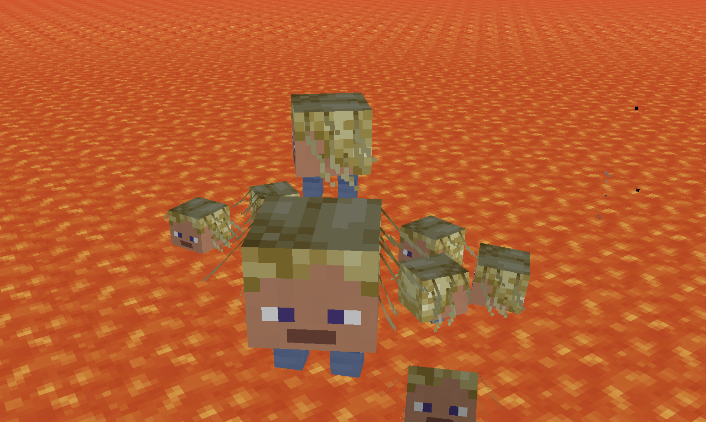
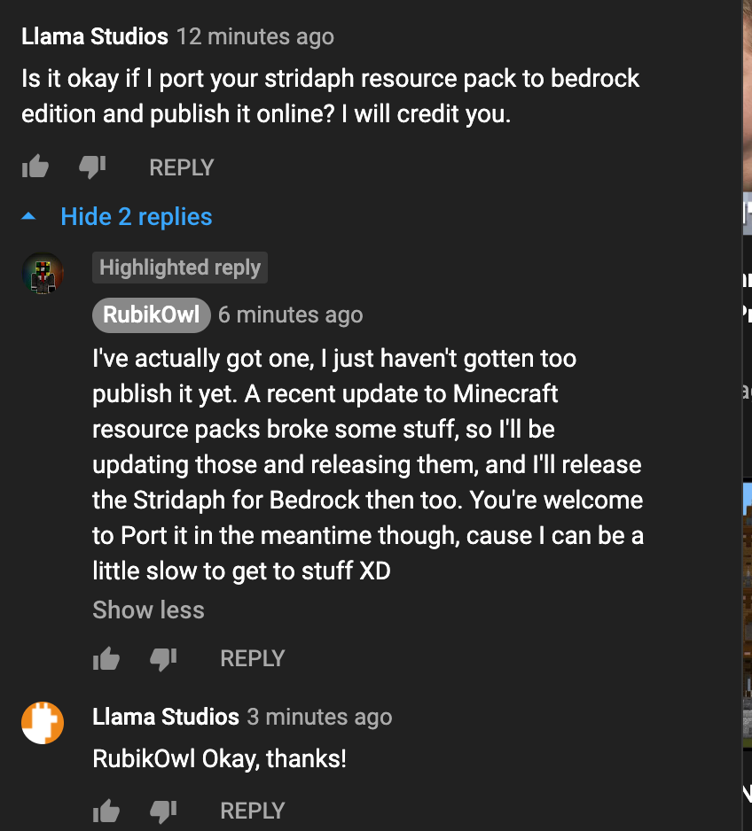

Originally by @RubikOwl, ported to Bedrock Edition by Llama Studios.
Sadly, I was unable to convert the sounds, but all the textures have been ported.
Apply in Global Resources to get stridaphs in all your worlds!
Yes, I have permission from RubikOwl.
